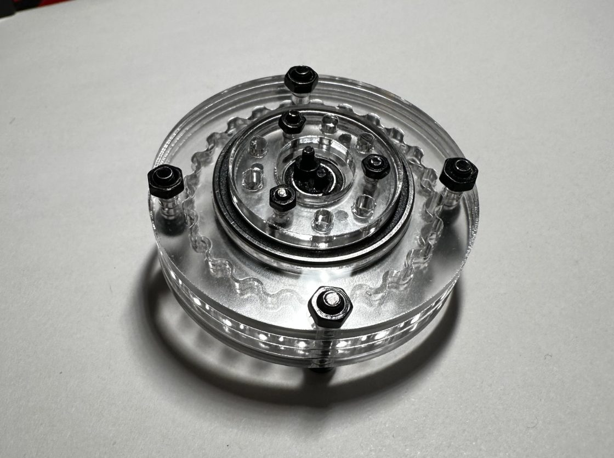
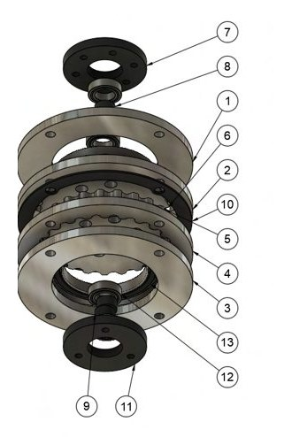
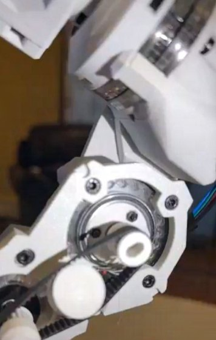
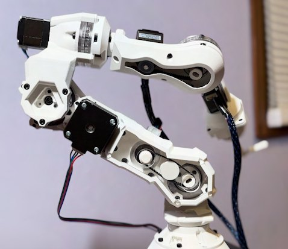
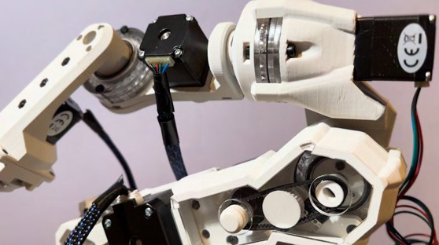

CYCLOIDAL ACTUATOR


Overview
My 6DOF arm runs on NEMA 17 stepper motors, so it needed gearboxes with a high reduction to get more torque and precision out of them. I went with cycloidal reducers. I couldn't find cycloidal gear profiles in our size range, and we didn't want to buy them, so I made my own.
The gear profiles come from a cycloid generator I built on the Desmos API. It turns a few parameters into equations that go straight into Fusion 360's Equation Driven Curve add-in, which is how every disc here was modeled. The actuators were all my work; the arm itself I built with Sahil Shah.
The result is a 28:1 gearbox with nearly zero backlash that's still backdrivable.
Design
The motor turns an eccentric cam, which drives the cycloid disc around inside a ring of fixed pins. Each turn of the input moves the disc over by one lobe, so the disc turns slowly the other way, and an output plate picks that up.
The plates are laser cut from acrylic, which is why everything is see-through. They can be 3D printed instead if laser cutting isn't an option. The rest is MR106 and 6705 bearings and bolts.
The generator page has a simulation of the disc and the math behind the profile.




Parts

| # | Part | Qty |
|---|---|---|
| 1 | Upper face | 1 |
| 2 | Cycloid ring | 1 |
| 3 | Lower face | 1 |
| 4 | Cycloid ring 2 | 1 |
| 5 | Cycloid 2 | 1 |
| 6 | Cycloid 1 | 1 |
| 7 | Upper pin holder | 1 |
| 8 | Upper cam | 1 |
| 9 | Lower cam | 1 |
| 10 | Housing spacer | 1 |
| 11 | Lower pin holder | 1 |
| 12 | MR106 bearing | 4 |
| 13 | 6705 bearing | 2 |
In the arm
The arm uses three NEMA 17s, two NEMA 11s and a NEMA 8, with belt-and-pulley linkages in DOF 2, 3 and 5. At the base, DOF 1 sits on one of these actuators along with an axial bearing, radial bearings and a limit switch, all inside a printed housing.









Video
I made a video about the actuators and how I generated them:
My 2023 maker portfolio video goes over this and a few of my other projects from high school: